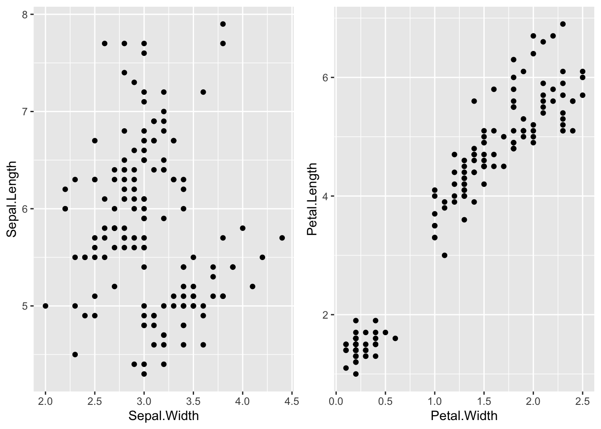
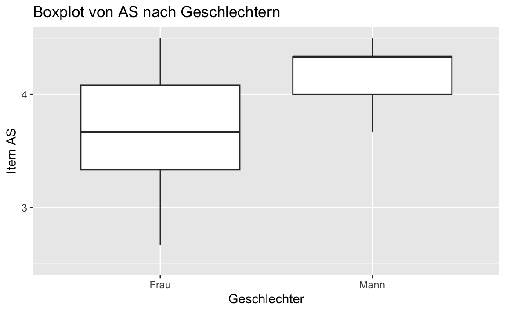
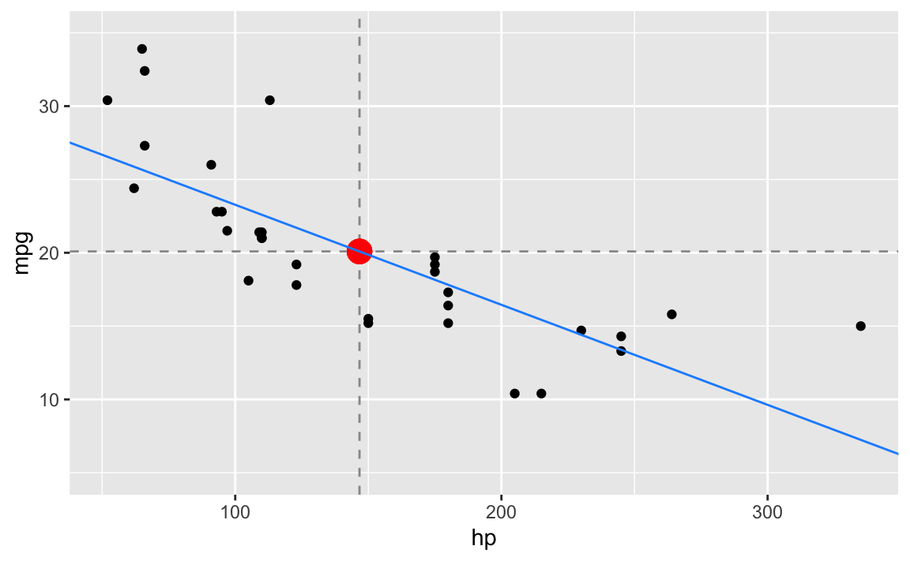
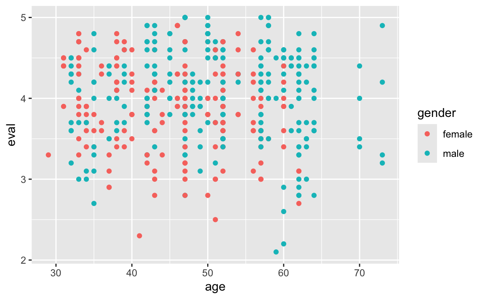
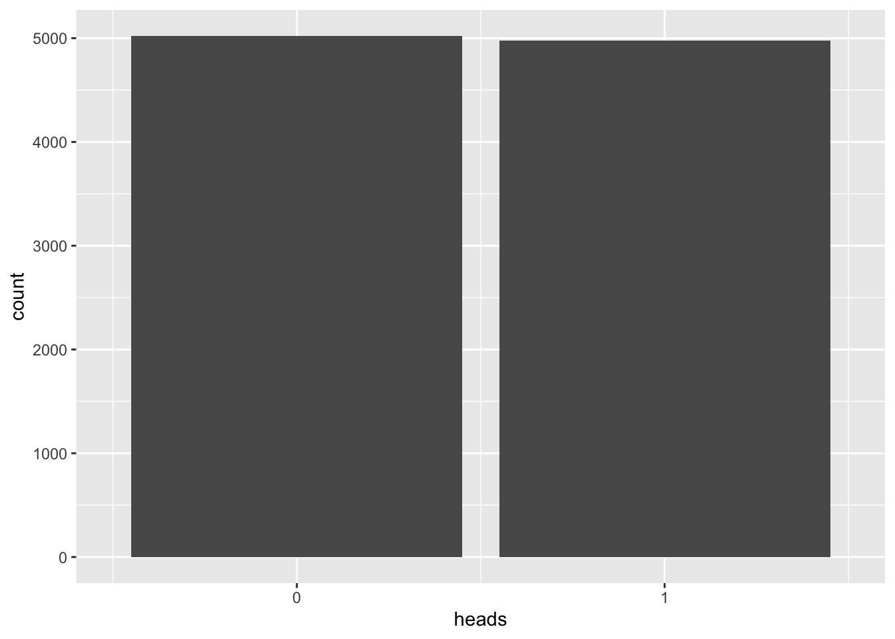
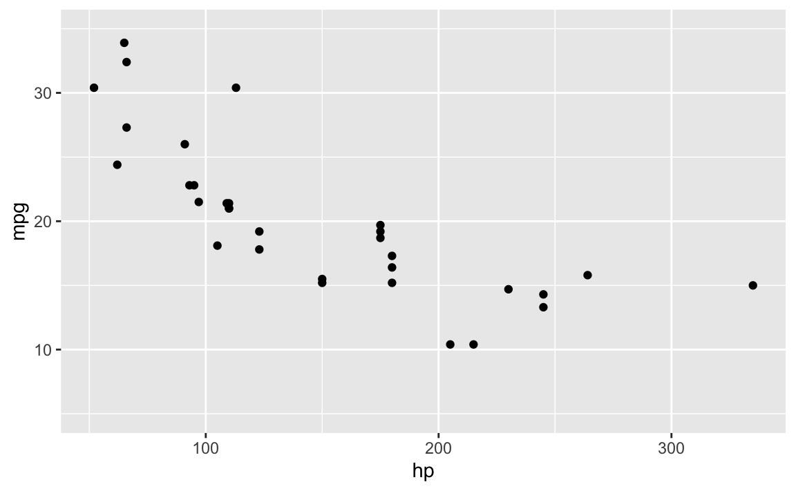
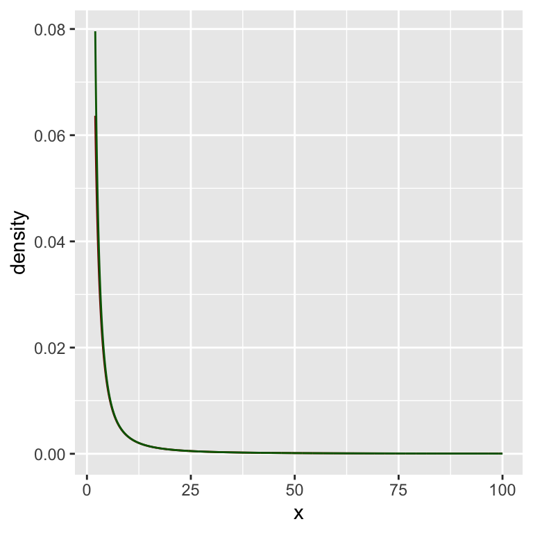
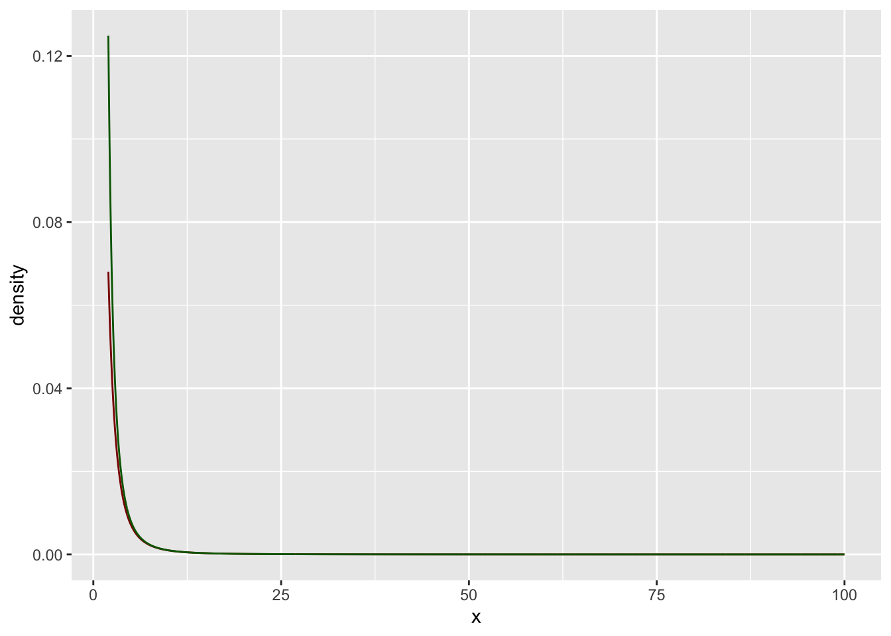
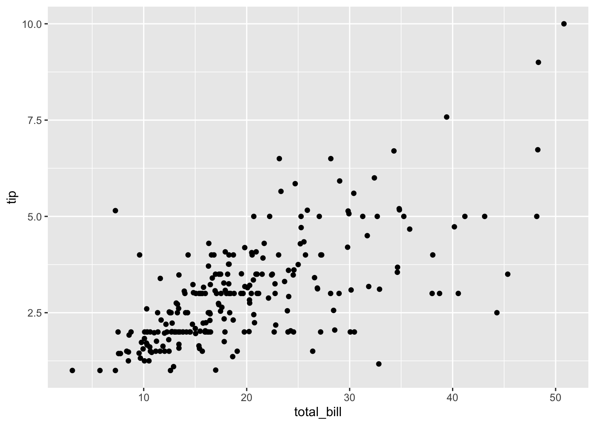
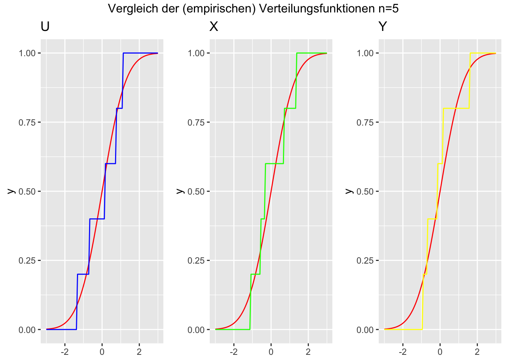

Norman’s Academic Blog
Home
Blog
Veröffentlichungen
Projekte
Blog
Categories
All
(20)
Allgemeines
(1)
Apache
(1)
CSV
(1)
Datenbank
(1)
Datenformate
(1)
Datenjudo
(1)
GraalPy
(1)
GraalPython
(1)
Mathematik
(1)
Miller
(1)
news
(1)
Nginx
(1)
PyPy
(1)
Python
(1)
Quarto
(1)
RaspberryPi
(1)
Speedtest
(1)
Statistik
(13)
Webserver
(1)
Quarto-Dokumente mit WebP anstatt PNG Bilddateien erstellen
Ich bin über die Quarto-Extension von KLaus Brunner mit dem Namen Convert PNG to WebP (Quarto Extension) gestolpert und nutze diesen nun regelmässig.
Dec 3, 2025
1 min
Brotli statt Gzip auf dem Server konfigurieren
Ich habe meinen Webserver von gzip auf brotli umgerüstet. Dachte ich jeden falls, aber alle Test mit
Aug 9, 2025
1 min
Wie mensch eine Datenbank auf einem RASPBERRY Pi Zero installiert
Am besten mit dem Raspberry Pi Installer von hier: https://www.raspberrypi.com/software/
Aug 9, 2025
3 min
Beweisverfahren in der Mathematik
Trivial!
Jul 27, 2025
2 min
Willkommen in meinem Blog
Das ist mein erster Blog-Eintrag! Ich werde nun hoffentlich (langsam) meinen Blog von Hugo aus Quarto umstellen. Ich arbeite viel mit R und eine extra Sprache nur für den…
Jul 19, 2025
1 min

Grafiken nebeneinander setzen mit ggplot2 oder ggformula
Ab und zu möchte mensch zwei (oder mehr) Grafiken neben- oder übereinander setzen.
Dec 27, 2021
1 min
CSV Dateien bearbeiten mit Miller
Miller beschreibt sich selbst folgendermaßen:
Aug 27, 2021
1 min

Datenjudo für Fragebögen
Ab und zu bekomme ich die Frage, wie man einen Fragebogen mit Likert-Scalen-Items auswerten kann.
Jun 27, 2021
5 min
Dinge die man in zwei Dimensionen machen kann - Multiple lineare Regression
Wir wollen den Fall unterschen bei dem wir mit zwei statistischen Variabeln (
\(X\)
und
\(Y\)
) eine dritte Variable (
\(Z\)
) mittels einer multiplen linearen Regression…
Jun 24, 2021
6 min

Regression mit studentisierten Daten
Bei einer einfachen linearen Regression versuchen wir zu vorgegebenen Datenpunkten
\((x_1, y_1), \cdots (x_n, y_n)\)
die Parameter einer möglichst passenden Gerade
\(g(x)=\be…
Jun 23, 2021
5 min

Interaktionseffekte leichter interpretieren durch Transformationen
Bei einer multiplen linearen Regression kann man den Einfluss einer unabhägigen Variable auf das Verhalten einer anderen unabhägigen Variable in Bezug auf die abhägige…
Jun 23, 2021
6 min

Wege zur Normalverteilung
Der fairen Wurf einer fairen Münze, also eine Münze bei der Kopf und Zahl gleich wahrscheinlich geworfen wird, sei der Ausgang des ersten Weges.
Jun 11, 2021
5 min

Über die Koeffizienten einer linearen Regression
Bei einer
einfachen Regression
versuchen wir zu gegebenen Datenpunkten
\((x_1, y_1), ..., (x_n, y_n)\)
eine
möglichst passende
Funktion
\(g(x)\)
zu finden, so dass
\[y_i =…
Jun 9, 2021
19 min
GraalPy , PyPy und (C)Python im kurzen Geschwindigkeitstest
Heute habe ich mit Hilfe von Pyenv einen kompakten Performance-Vergleich zwischen (C)Python3, PyPy und GraalPython durchgeführt.
Apr 8, 2021
4 min

Über die t-Verteilung mit einem bzw. zwei Freiheitsgraden
Für die graphischen Ausgaben nutzen wir R und das Paket
mosaic
:
Feb 17, 2021
7 min
Behäbige Funktionen aka slowly varying function
Reelle Funktionen, die ihren Funktionswert kaum ändern, kann man mit Fug und Recht durchaus behäbig nennen, korrekter wäre aber von
langsam variierenden
Funktionen zu sprechen
Feb 13, 2021
3 min

Ein paar Gedanken über potenzgesetzliche Verteilungen (power law distributions)
Eine Funktion
\(f(x)\)
heißt
potenzgesetzlich
, falls
Feb 12, 2021
6 min
Gedankenstütze zu wichtigen Funktionsbegriffen in der Statistik
Gilt für eine reelle Funktion
\(f: \mathbf{R} \to \mathbf{R}\)
:
Feb 12, 2021
3 min

Cook Abstand
Frage: Was macht einen Wert zum Ausreißer?
Jun 29, 2020
4 min

Der Zentrale Grenzwertsatz
Seien
\(X_1, X_2, ..., X_n\)
unabhängige und identisch verteilte Zufallsvariablen mit bekanntem Erwartungswert
\(E(X_i) = \mu\)
und bekannter Varianz
\(Var(X_i)=\sigma^2\)
.
Apr 5, 2017
4 min
No matching items